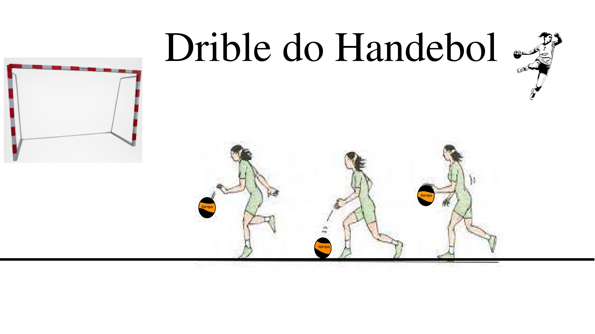
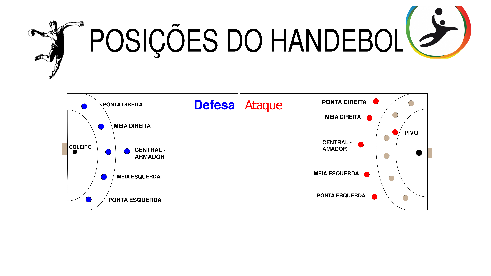
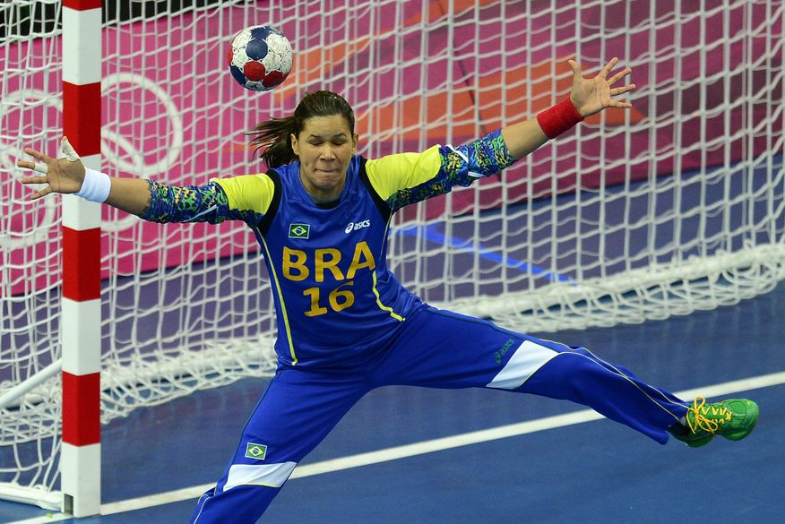
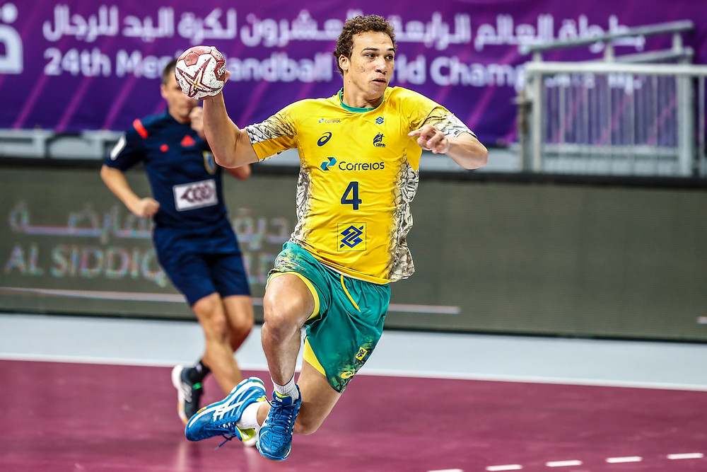
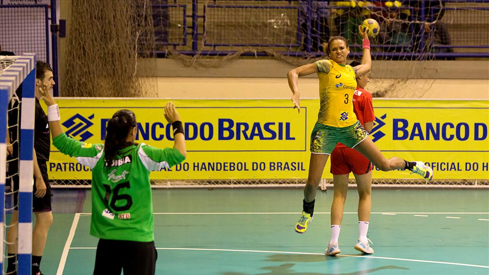
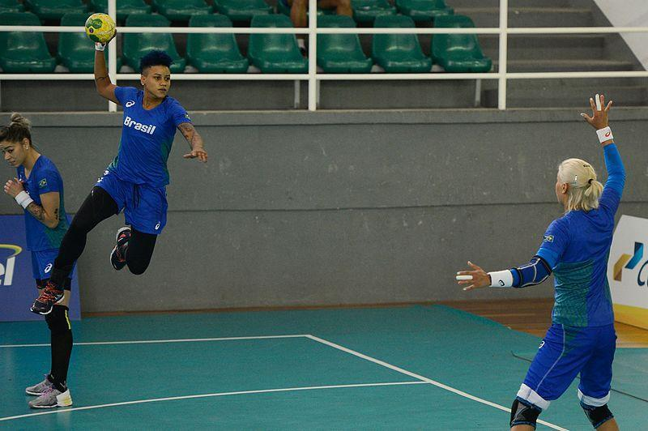

O Drible é um fundamento básico do Handebol, trata-se do ator de quicar a bola com uma das mãos sem perder o domínio da bola. O drible porde ser feito com o jogador parado ou em movimento. A principal função do drible no Handebol é a progressão com posse de bola.

Exemplo de drible
Posições no handebol:
Os posicionamentos táticos dentro do handebol podem assumir a seguinte forma: goleiro, armador central, meias, pontas e pivô.

Posições do handebol
Goleiro
O goleiro é um jogador essencial para realizar a defesa. Por isso, o objetivo do seu treinamento deve ser identificar os potenciais focos e pontos de ataque dos adversários. Desse modo, assim que a defesa é rompida, o goleiro deve ter um reflexo rápido e antecipar o provável local em que o atacante oponente arremessará a bola, evitando que ela entre pela baliza.
É essencial o goleiro:
ter uma estatura maior que a média;
ter concentração;
ter boa visão de jogo;
saber atuar como jogador de linha;
controlar o tempo de bola;
tentar atuar conforme os próximos passos dos adversários.

Goleiro
Armador Central
Esse jogador é o cérebro e a locomotiva da equipe, visto que comanda o processo de armação e organização das jogadas. Como o nome sugere, a sua atuação se dá pelo centro de campo. As habilidades do Armador Central envolvem:
força;
agilidade;
concentração e variedade nos passes;
bom arremesso de longa distância;
criatividade na formação dos esquemas táticos;
comunicação simples e clara com o restante da equipe.

Armador Central
Meias
Esses jogadores são o combustível para todo o restante da equipe. São conhecidos também como Armador Direito (Meia Direita) e Armador Esquerdo (Meia Esquerda). Eles são responsáveis por conferir um ritmo mais equilibrado e defensivo ao resto do time.
Os principais atributos de um Meia são:
técnica precisa e potência no impulso;
recepção bem feita dos passes;
dar continuação às jogadas e arremessos fortes e mais altos.

Meias
Pontas
Os pontas são encarregados de participar das ações de ataque, atuando nas proximidades das linhas laterais do campo, próximos ao ponto de escanteio. Eles têm a função de atrair a defesa adversária, proporcionando um espaço maior entre os jogadores defensores no centro da quadra. Os principais atributos de um Ponta no handebol são:
agilidade;
precisão para fazer o arremesso em ângulos fechados;
habilidade na pontaria;
saber se posicionar de maneira rápida para montar um contra-ataque etc.

Pontas
Pivô
O pivô no handebol é o jogador responsável por aproveitar oportunidades ofensivas e criar espaços dentro da linha de defesa do time adversário. Dessa forma, pode se infiltrar nesses pontos e ter condições de fazer arremessos de uma distância menor e com mais chances de serem bem-sucedidos.
Assim, ele consegue chegar perto da linha do goleiro e fazer o gol sem a necessidade de empenhar muita força ou impulsão. Além disso, eles se posicionam de maneira estratégica para que tenham condições de receber o passe de bola e fazer a finalização da jogada.
um repertório amplo de arremessos;
agilidade nos passes;
capacidade de lidar com as marcações constantes que recebe dos adversários;
dominar os arremessos especiais — arremesso em suspensão, em queda, salto com queda; /li>
saber administrar demais arremessos — reversão, reversão com queda, percussão aérea etc.